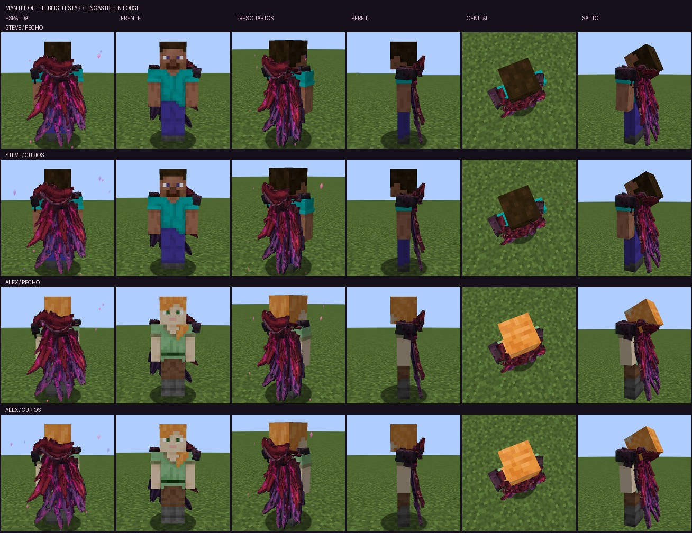
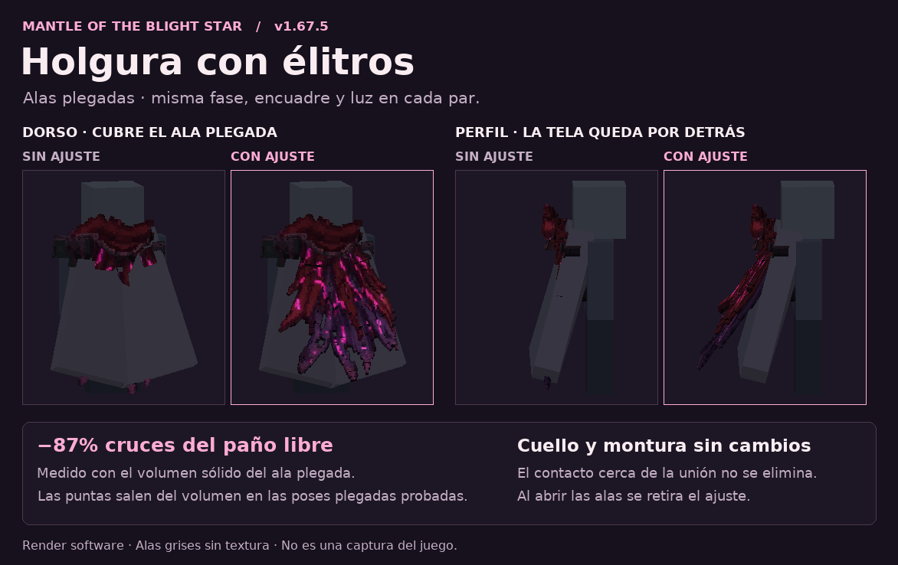

v1.67.36 · Brasas al agacharse · En pruebas
Mantle of the Blight Star
Los puntos de nacimiento de las brasas acompañan al torso al agacharse. Verificado en Forge en pecho y Curios, sin cambiar el vuelo ni el paño.

Capturas reales en Forge. Pruebas y notas · Versión anterior.

Ver el dorso junto a la referencia original
En los renders del visor se usa un portador neutro. El pelo y la ropa de la referencia no forman parte de la capa.